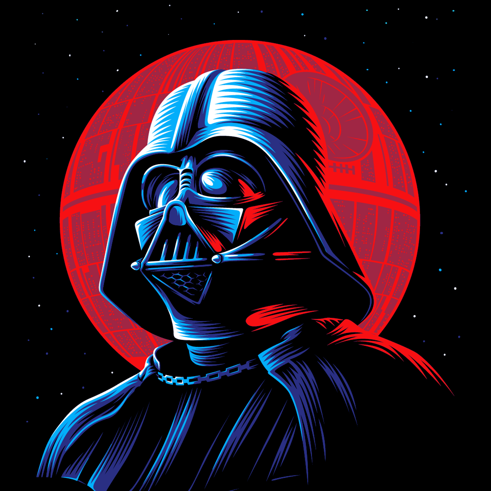

<nav class="navbar navbar-expand-lg navbar-dark" style="position: fixed;">
    <a class="navbar-brand" href="#">
        
    </a>
    <button class="navbar-toggler" type="button" data-toggle="collapse" data-target="#navbarSupportedContent"
        aria-controls="navbarSupportedContent" aria-expanded="false" aria-label="Toggle navigation">
        <span class="navbar-toggler-icon"></span>
    </button>

    <div class="collapse navbar-collapse" id="navbarSupportedContent">
        <ul class="navbar-nav mr-auto">
            <li class="nav-item">
                <a class="nav-link" [routerLink]="[ '/' ]" routerLinkActive="active">Pagina Inicial</a>
            </li>
            <li class="nav-item">
                <a class="nav-link" [routerLink]="[ '/characters' ]" routerLinkActive="active">Personagens</a>
            </li>
            <li class="nav-item">
                <a class="nav-link" [routerLink]="[ '/starships' ]" routerLinkActive="active">Naves Estelares</a>
            </li>
        </ul>
    </div>
</nav>